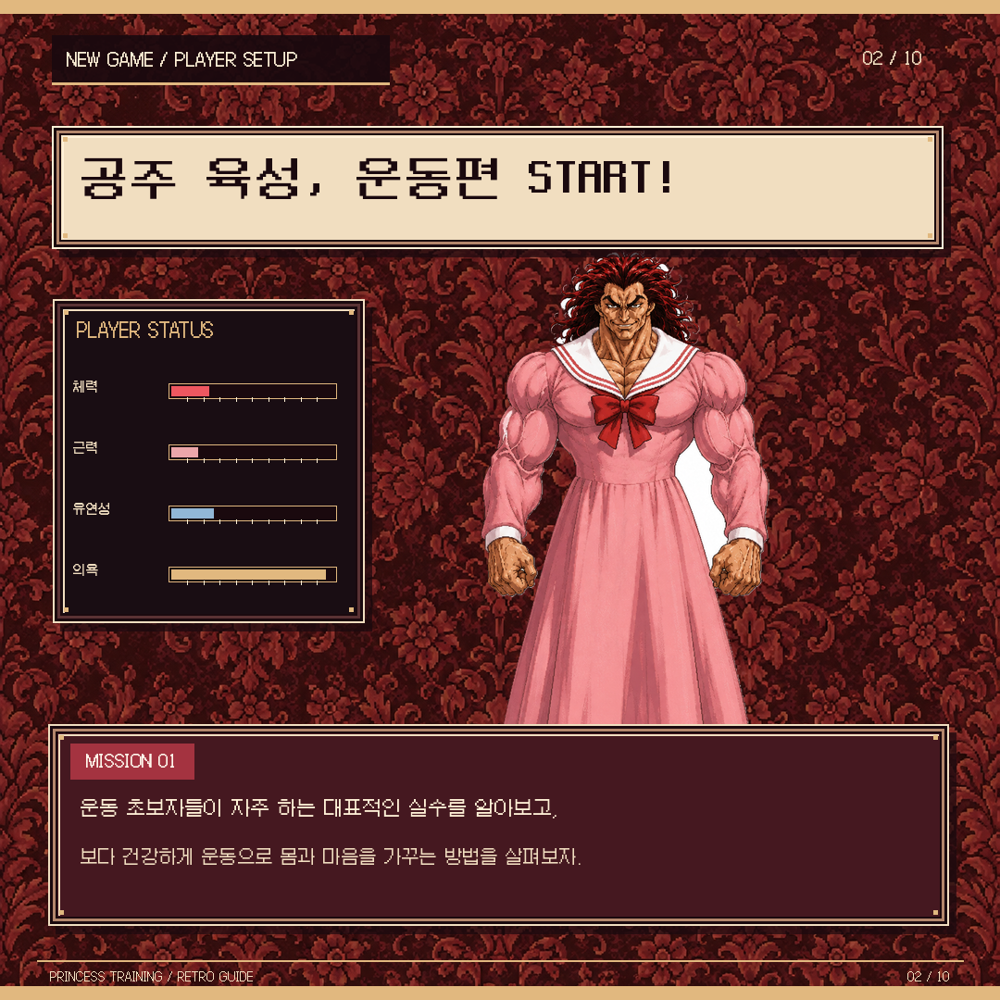
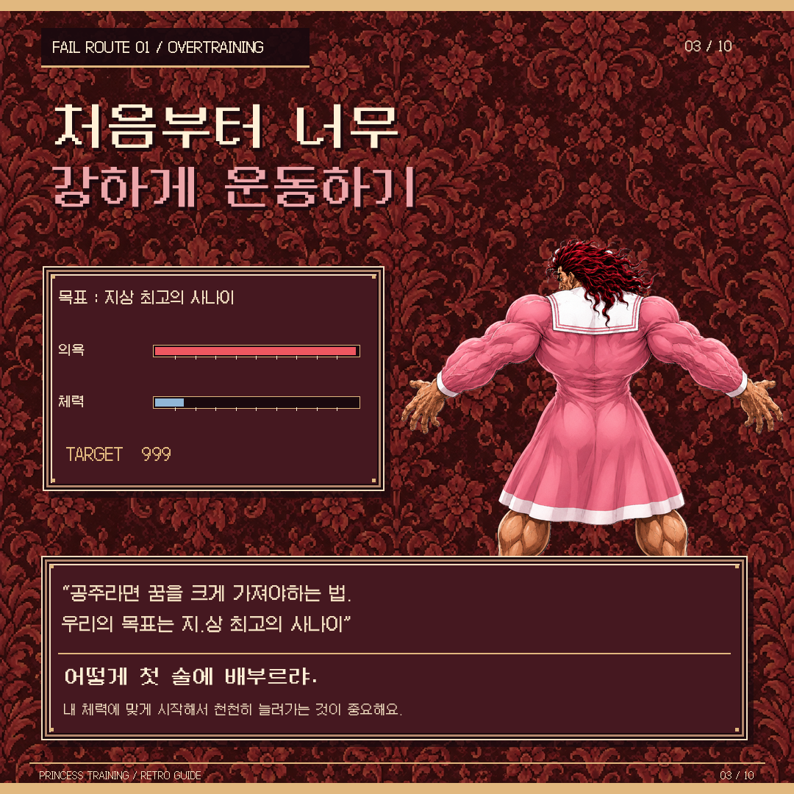
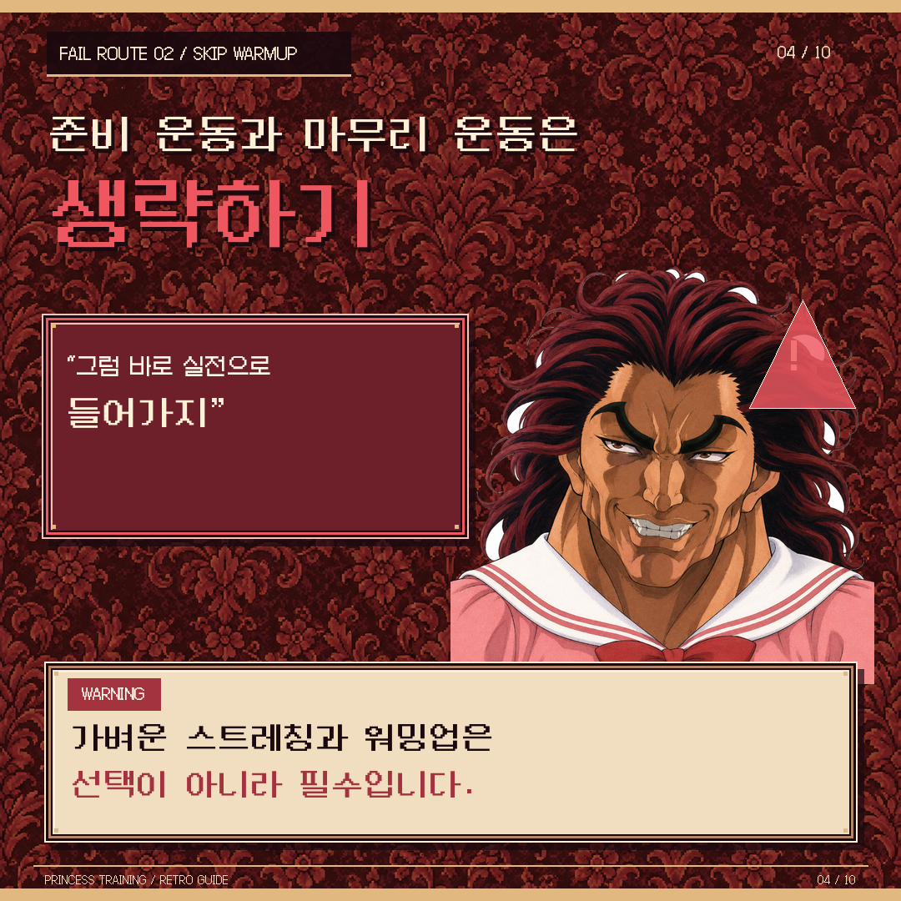
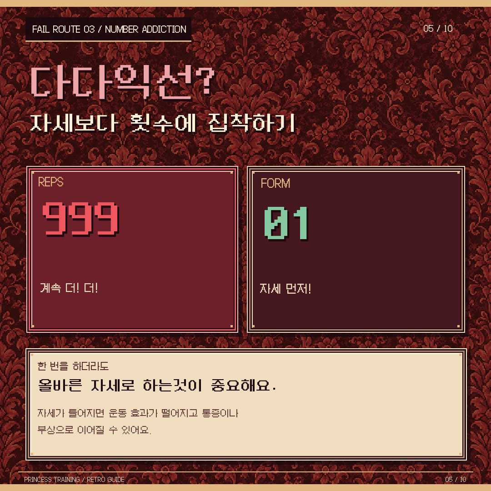
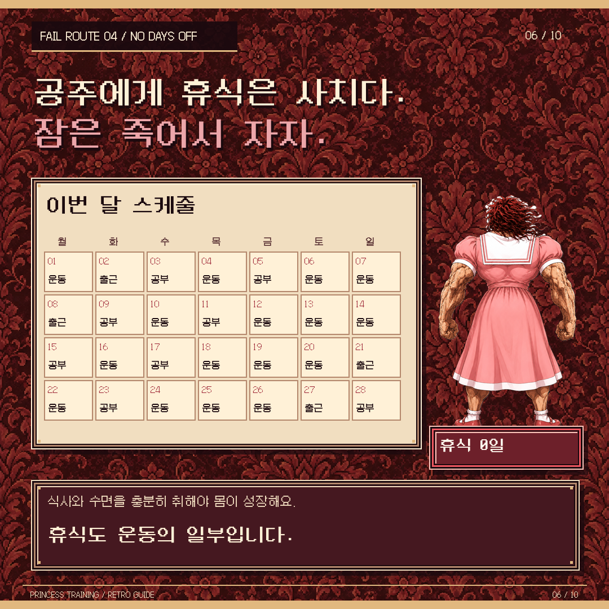
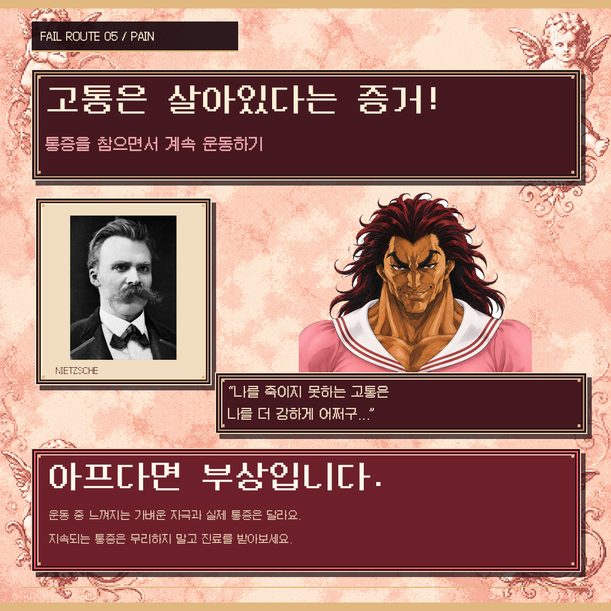
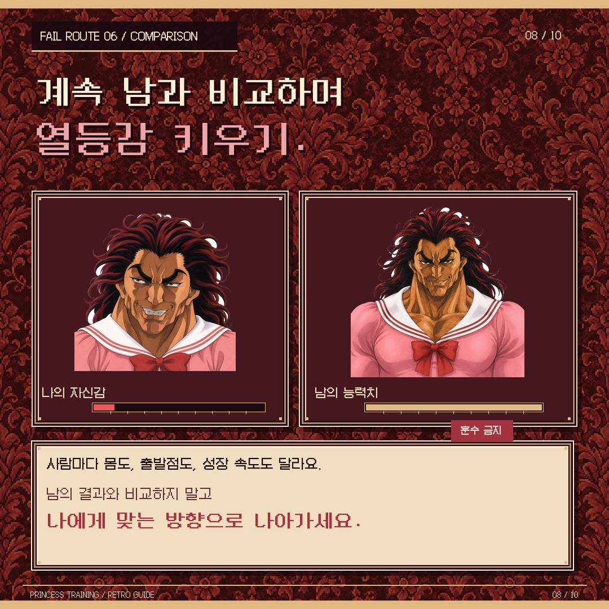
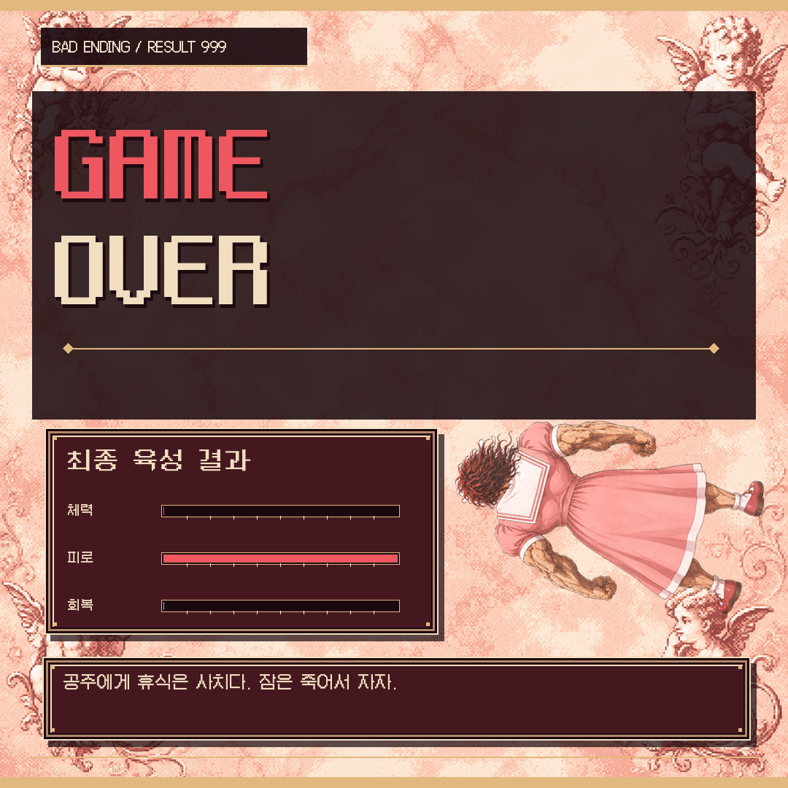
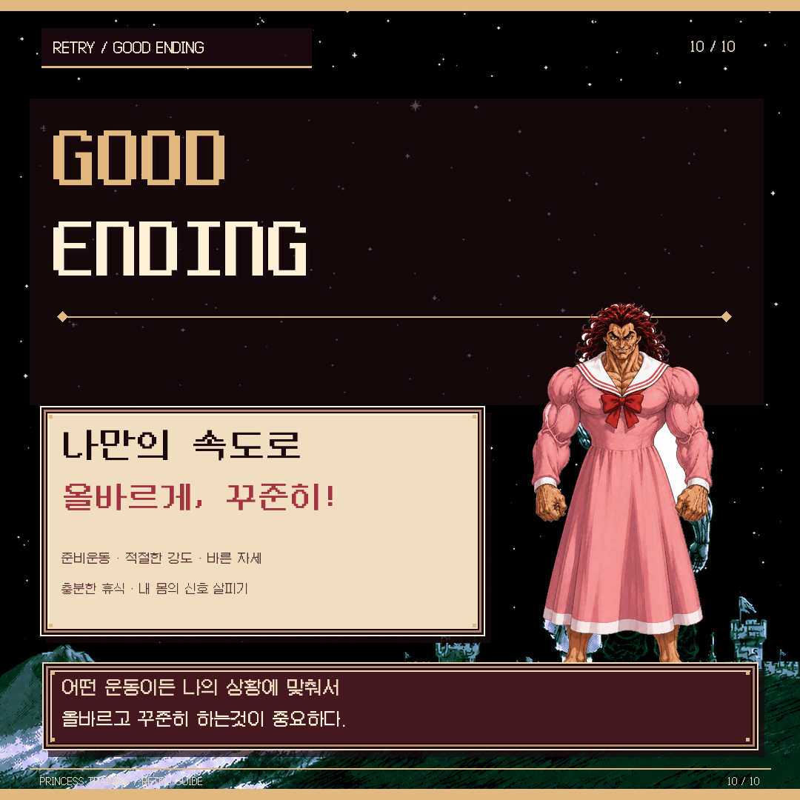
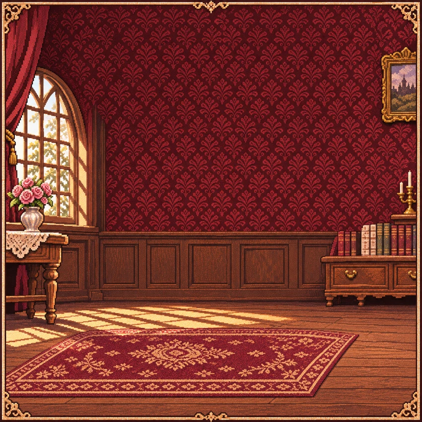

ALL WORKS

ILLUSTRATION & GRAPHIC · CARD NEWS
운동 초보가 가장 자주 하는 실수
레트로 육성게임의 실패와 성장 엔딩으로 풀어낸 운동 입문 카드뉴스.
OVERVIEW
운동을 육성게임의 선택지로 바꾸다
운동 초보가 겪기 쉬운 여섯 가지 실수를 게임 속 선택지처럼 구성했습니다. 근육질 공주와 실패·성공 엔딩을 통해, 자기 속도에 맞춰 꾸준히 운동한다는 메시지를 전합니다.
- 규격
- 1080 × 1080px · 10장
- 담당
- 원고 기획 · 아트 디렉션 · 합성 · 편집
- 도구
- Photoshop · AI 이미지 생성
FINAL OUTCOME
카드뉴스 10장
표지부터 GOOD ENDING까지. 카드를 선택하면 확대해서 읽을 수 있습니다.


















DESIGN PROCESS
픽셀 UI와 카드의 읽는 순서
분홍 드레스를 입은 근육질 공주
초기 운동 소녀 시안에서 어깨와 팔이 드레스 밖으로 불거져 나오는 근육질 공주로 바꿨습니다. 운동 강도를 무작정 올리는 선택의 결과를 한 장면에서 보여주기 위해서입니다.
한글과 배경을 나눠 제작
AI 이미지 속 글자가 흐트러지는 문제를 피하려고 배경과 프레임을 무문자로 만들고, 제목과 대사는 후편집에서 배치했습니다.
실패와 성장의 엔딩을 분리
카드마다 제목의 크기와 화면의 무게중심을 다르게 잡았습니다. GAME OVER와 GOOD ENDING을 나누어 실수의 결과와 다음 선택을 차례로 보여주었습니다.

